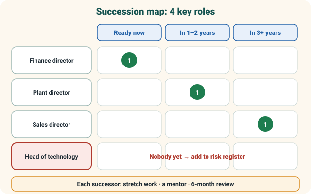

K9 · Leadership and developing others › Level 5 Leading
Review the course: prepare future leaders and succession
This lesson completes Sheet 8: Succession map. Print template. It reuses the risk register (Sheet 7) and the mentoring approach from Mentor a colleague (N4).
1. Objectives
- Build a succession map for key roles, with 3 readiness levels for successors.
- Write a development plan for a successor: stretch assignments, a mentor, review points.
2. Retrieval warm-up
These questions mix the whole course. Answer without looking, then open the answers.
- What do the labels D and O mean in the executive calendar?
- In a pre-mortem, why does each person write alone before discussion?
- What does each dependency between two divisions need?
- Why must a direction note include "What we do not know yet"?
- How many people decide each decision?
- What are the three steps when you hear bad news?
- What three parts is each risk written in?
Answers
- D: direct reports can do it. O: organisation-level work.
- So views are not swept along by the first speaker, especially a senior one.
- A named coordinator.
- Because when leaders are silent, people guess, usually worse than reality.
- One person.
- Thank the person; ask for facts; ask what is needed.
- Cause → event → consequence.
Review: N6 course map.
3. Explanation
Ask yourself: if a key person left suddenly next week, what would stop? If the answer is "a lot", that is a major risk for the organisation.
Step 1. Choose the key roles. Roles where a vacancy would hit the organisation hard, and that are hard to fill quickly from outside.
Step 2. Record successors at 3 readiness levels.
- Ready now: could take over if they had to start this week.
- Ready in 1–2 years: still missing some specific experience.
- Ready in 3+ years: has potential, needs a lot of development.

Step 3. A development plan. For each successor, note the main gap and how to close it:
- Stretch assignments: acting in your role while you are away, leading a cross-division project, meeting major clients or partners.
- Mentor: who meets them regularly and gives behaviour-based feedback.
- Formal learning: a course aimed at the gap, if needed.
- Review points: every 6 months, check whether their readiness has changed.
Three things to avoid
- Choosing people like youGo by results and behaviour, not a feeling of fit.
- Only one assessorHear at least two more people who work with them.
- Total secrecySuccessors need to know which role they are being developed for.
A role with no successor goes into the risk register from Lesson 7, with an owner and a deadline.
4. Workplace example
Hypothetical scenario. A pharmaceutical company's plant director will retire in 18 months. The CEO, Tanya, completes Sheet 8.
She chooses 4 key roles. For plant director, there are two candidates. Victor, head of production, is strong on operations but has never dealt with regulators. Lina, head of quality assurance, knows the regulations well but has not managed at large scale.
Tanya also asks the HR director and technical director for their views. Both candidates are rated "ready in 1–2 years".
Plan for Victor: lead the team at the next regulatory inspection; his mentor is the current plant director. Plan for Lina: run one production unit for 6 months. Review points: months 6 and 12.
The head of technology role has no successor. She records it in the risk register, owned by the HR director.
Why this works: there are two candidates and several assessors. Each person has a stretch assignment aimed at their gap. The vacancy is managed as a risk.
5. Practice
Hypothetical scenario. You are CEO of a tour operator. The sales director is the only person who holds the relationships with 5 major partners.
Write one succession map line for this role. Write a development plan for one successor.
Hint 1
If partner relationships sit with one person, what is the successor's biggest gap?
Hint 2
A good stretch assignment for this gap is going along first, then owning one partner.
Model answer
- Role: sales director. Successor: Sophie, group sales team leader, "ready in 1–2 years".
- Gap: no relationships with major partners yet; has not negotiated an annual contract.
- Stretch assignment: go with the sales director to meet the 5 partners next quarter; own 1 partner from the quarter after.
- Mentor: the sales director, meeting every 2 weeks.
- Review point: after 6 months.
- Risk register: add "partner relationships held by one person", owned by you.
(The details are hypothetical.)
6. Self-check
Choose an answer. Every option has an explanation.
Question 1. You plan to choose a successor because he works in a way that suits you. What is missing?
-
Not quite. Getting on well easily leads to choosing people like you. The organisation may need other skills.
-
Correct. Correct. Several sources of assessment reduce one person's bias.
-
Not quite. A questionnaire does not replace evidence of results and behaviour in real work.
Question 2. The technology director role has no successor. How should you handle it?
-
Not quite. By then it may be too late. A key role left empty is a major risk.
-
Correct. Correct. Manage the vacancy as a risk, with an owner and a threshold.
-
Not quite. Filling the table makes it look good, but the risk remains.
Question 3. A successor is technically strong but has never worked with the board. Which stretch assignment fits?
-
Not quite. A course may help, but it gives no real experience with the board.
-
Correct. Correct. A stretch assignment aimed at the gap, with a mentor, builds learning from real experience.
-
Not quite. Learning once in the seat is riskier for both the person and the organisation.
Question 4. Review: the CEO must approve every small purchase, so has no time to meet successors. Which two tools from the course help most?
-
Correct. Correct. The calendar separates D from O work. The rights table moves approvals down by threshold.
-
Not quite. These are for major decisions and communication. They do not free up time.
-
Not quite. These help you see risks, but they do not reduce small approvals.
Question 5. Review: for three months every division has reported "fine", yet revenue from existing customers is falling. What should you do first?
-
Correct. Correct. When reports and figures do not match, news may be filtered. Look for the real picture.
-
Not quite. Changing strategy before understanding the cause is a rushed decision.
-
Not quite. Longer reports still pass through the same filters.
7. Reflection
- If you left suddenly next week, who would step in? How ready are they?
- Is your successor too much like you?
8. Real-world application
In the next 7 days, complete Sheet 8 for at least 3 key roles. Ask at least two people about each candidate. Add any role with no successor to the risk register.
Level of evidence. This lesson draws on the capability descriptions "Developing Self and Others" (UK Success Profiles) and "Leading People" (US OPM, 2025). The three readiness levels and Sheet 8 are this site's proposed method. The site has found no strong peer-reviewed research on each succession step.
9. Metadata
| skill | K9 · Leadership and developing others |
|---|---|
| level | Level 5 · Leading |
| group | N6 |
| framework_map | UK Civil Service Success Profiles: Developing Self and Others; Leadership; US OPM ECQs (2025): Leading People; WEF: Talent management; SkillsFuture CCS: Developing People; NACE: Leadership (reference only) |
| original | Vietnamese version |
| updated | 2026-11-14 |
Finish the lesson
Mark it as done and the site suggests reviews after 1, 3 and 7 days. The data stays on your device only.
Suggested reviews: